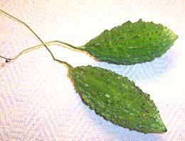
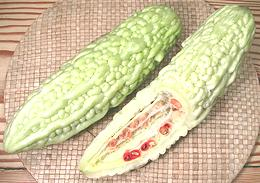

Actually a gourd, not a mellon, this is one of the most bitter of edible vegetables, the bitterness coming from a substance called momordicin, which is similar to quinine. Bitter Melon is reputed for many beneficial medicinal properties, particularly for treatment of diabetes, but all need further study.
Aside from the bitterness, the flavor of this gourd is very interesting, and it is popular throughout India, Nepal, China and Southeast Asia. While long popular in Okinawa, this gourd has recently gained popularity on the main islands of Japan. People are using the vines to shade the sun side of their homes, and the gourds are available in markets during the Summer, for use in Okinawa style dishes.
Bitter Melon is now also grown in Africa, the Caribbean, and of course California. The Chinese variety is always in very good supply here in Los Angeles, and the Indian varieties are increasingly available.
The gourds are generally eaten quite green when the seed mass will be white. As the gourd ripens fully it turns yellowish, very bitter and less crisp. The pulpy arils surrounding the seeds become brilliant red and quite sweet. They are popular in salads in Southeast Asia but at this point the rest of the melon is of little use.
The melon at the top in the photo is the common Chinese variety, while the other three are the Indian variety. White versions of the Indian type also exist but are not much seen around here. Miniature Indian varieties are popular in India and Southeast Asia for stuffing as individual portions.
For information on Bitter Melon Leaves see
Bitter Melon Leaf.
For more on Gourds see Gourds.
|


|
In parts of Asia, developing a taste for bitter melon is part of the passage from childhood to adulthood, though even there many recipes have some step in them that's a largely futile attempt to reduce the bitterness. While I enjoy a bitter melon dish now and then, I wouldn't serve one to guests without notice - most Americans aren't accustomed to bitter flavors - they even adulterate their coffee with cream (suspected of destroying the health benefits of coffee). I often just seed a melon, slice it about 1/4 inch thick, salt the slices heavily and let them sit an hour. I rinse the slices and eat them as a low calorie salty snack. Buying:The darker green the color the better as they get increasingly bitter and less crisp as they mature. If they are yellowish they are useful only for the brilliant red arils surrounding the seeds. For use as a vegetable the seed mass should have no more than a faint pink blush surrounding the seeds. Select fresh looking fruit without soft spots or blemishes. The Indian type tends to get black spots where the points have been damaged. This indicates they aren't very fresh.Different varieties have different degrees of bitterness. The Indian type is the most bitter. I occasionally find a long narrow dark green Chinese variety that's a little milder than most. The very large Taiwan variety pictured at the left may be a little too mild. It might be a good "starter melon" if it weren't so rare. Storing:These gourds are quite perishable, the Indian varieties more so because their pointy skin is more prone to damage. In either case they should be kept refrigerated, preferably wrapped in paper rather than plastic and for a few days at most.Prep:Generally cut off the ends, split the gourd lengthwise and scrape out the seed mass with a spoon. In cases where they are stuffed, they are often cut into lengths of about 1-1/4 inch and the seed mass is pushed out. The cylinders are stuffed and set on end for serving. The skins are thin and they are very rarely peeled.After cutting, many recipes call for either salting the pieces, then rinsing, or parboiling. These procedures are supposed to reduce the bitterness but aren't really very effective, and parboiling is thought to reduce the beneficial medicinal value. Cooking:Bitter melons are most often used in soups and stir fries or stuffed. For stir fries do parboil the melon slices in boiling water for about 3 minutes so they need be stir fried for only a minute or two.Health & Nutrition:Bitter Melon tastes bitter and medicinal, so it's got to be good for you, right? These gourds and their leaves are considered highly medicinal, particularly effective against type 2 diabetes, but also against cancer, HIV and hemorrhoids. These effects have neither been proven nor disproven by scientific investigation. This is an inexpensive, commonly available plant, usable as-is, so pharmaceutical companies are totally uninterested in sponsoring major studies. Smaller studies have tended to support bitter melon's reputed benefits.While bitter melon does not contain quinine, it has been found to have similar anti-malarial properties. Anti-viral and antioxidant properties are also suspected. Bitter melon is high in minerals and vitamin B, but how much is in a form the body can absorb is not known - again, nobody is interested in sponsoring research on something they cant patent. There are also negative effects. An overdose in small children can cause hypoglycemic coma, for the same reason it's good against diabetes - lowering blood sugar. It is also reported able to cause headaches, though I haven't noticed such an effect. |